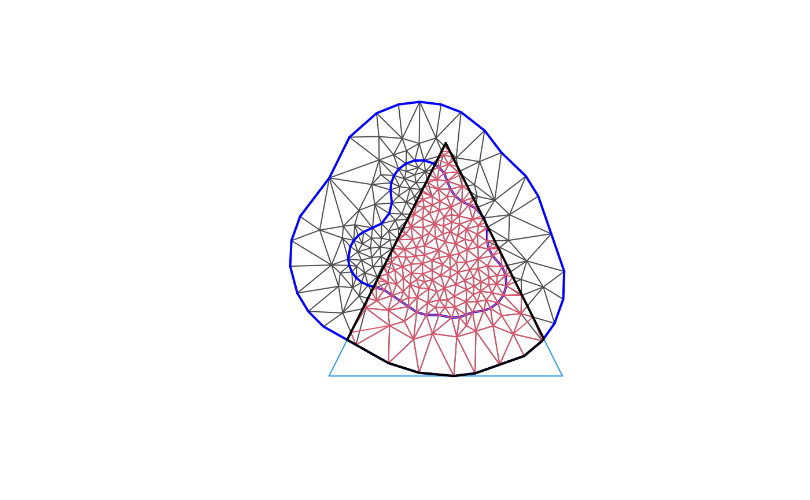

Construct the intersection mesh of a mesh and a polygon
Arguments
- mesh
fm_mesh_2dobject to be intersected- poly
fm_segmobject with a closed polygon to intersect with the mesh
Value
An fm_mesh_2d object
Author
Finn Lindgren finn.lindgren@gmail.com
Examples
segm <- fm_segm(rbind(c(-4, -4), c(4, -4), c(0, 4)),
is.bnd = TRUE
)
str(m <- fm_mesh_intersection(fmexample$mesh, segm))
#> List of 8
#> $ meta :List of 1
#> ..$ is.refined: logi FALSE
#> $ manifold: chr "R2"
#> $ n : int 256
#> $ loc : num [1:256, 1:3] 3.36 2.99 2.63 2.62 2.61 ...
#> $ graph :List of 5
#> ..$ tv : int [1:429, 1:3] 2 5 15 127 95 254 9 89 52 8 ...
#> ..$ vt : int [1:256, 1] 248 289 1 82 2 2 84 10 7 189 ...
#> ..$ tt : int [1:429, 1:3] 11 199 205 266 NA 288 321 309 125 7 ...
#> ..$ tti: int [1:429, 1:3] 2 1 3 3 NA 2 1 3 1 2 ...
#> ..$ vv :Formal class 'dgCMatrix' [package "Matrix"] with 6 slots
#> .. .. ..@ i : int [1:1368] 1 78 0 2 78 238 253 1 3 238 ...
#> .. .. ..@ p : int [1:257] 0 2 7 11 14 17 21 25 28 32 ...
#> .. .. ..@ Dim : int [1:2] 256 256
#> .. .. ..@ Dimnames:List of 2
#> .. .. .. ..$ : NULL
#> .. .. .. ..$ : NULL
#> .. .. ..@ x : num [1:1368] 1 1 1 1 1 1 1 1 1 1 ...
#> .. .. ..@ factors : list()
#> $ segm :List of 2
#> ..$ int:List of 5
#> .. ..$ loc : NULL
#> .. ..$ idx : int[0 , 1:2]
#> .. ..$ grp : int(0)
#> .. ..$ is.bnd: logi(0)
#> .. ..$ crs : NULL
#> .. ..- attr(*, "class")= chr [1:2] "fm_segm" "inla.mesh.segment"
#> ..$ bnd:List of 5
#> .. ..$ loc : NULL
#> .. ..$ idx : int [1:81, 1:2] 1 2 3 4 5 6 7 8 9 10 ...
#> .. ..$ grp : int [1:81] 0 0 0 0 0 0 0 0 0 0 ...
#> .. ..$ is.bnd: logi [1:81] TRUE TRUE TRUE TRUE TRUE TRUE ...
#> .. ..$ crs : NULL
#> .. ..- attr(*, "class")= chr [1:2] "fm_segm" "inla.mesh.segment"
#> $ idx :List of 3
#> ..$ segm : NULL
#> ..$ lattice: NULL
#> ..$ loc : int [1:256] 1 2 3 4 5 6 7 8 9 10 ...
#> $ crs :List of 2
#> ..$ input: chr NA
#> ..$ wkt : chr NA
#> ..- attr(*, "class")= chr "crs"
#> - attr(*, "class")= chr [1:2] "fm_mesh_2d" "inla.mesh"
plot(fmexample$mesh)
lines(segm, col = 4)
plot(m, edge.color = 2, add = TRUE)
